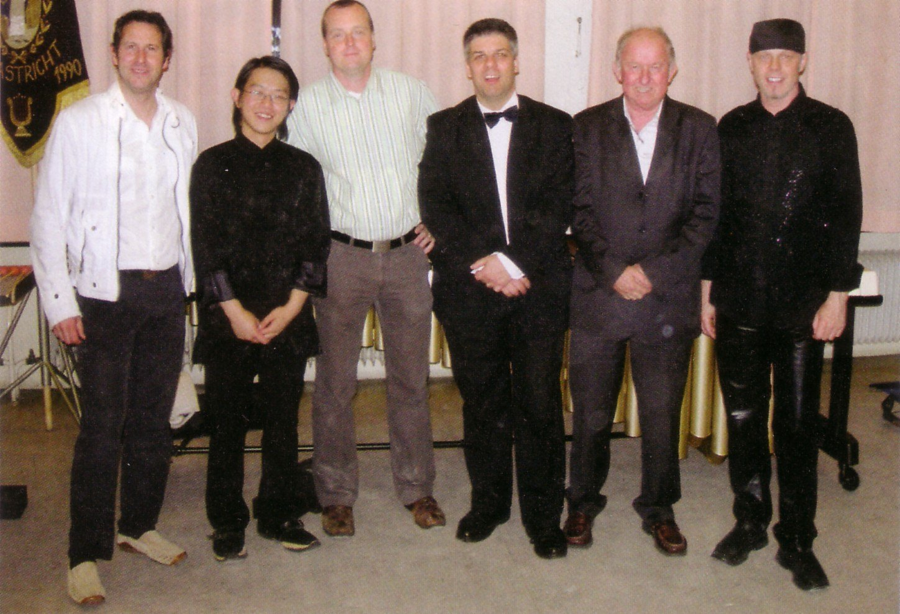
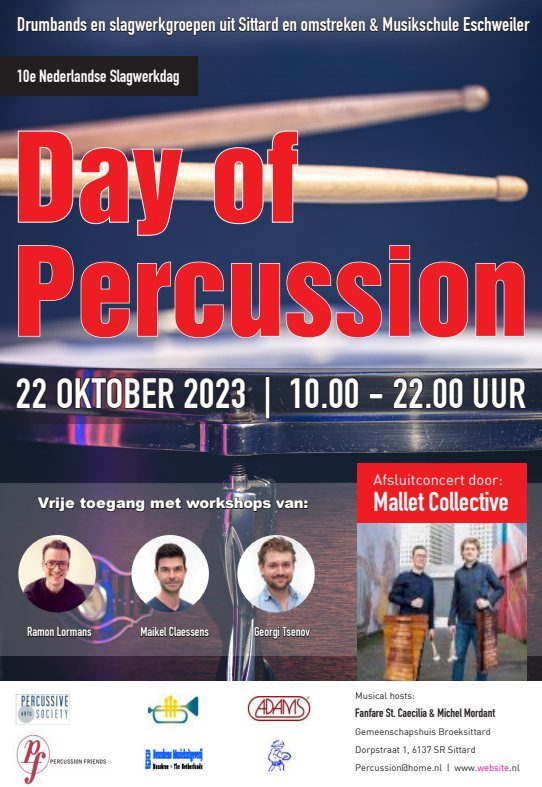

Percussion World
Michel Mordant
- Componist
- Dirigent
- Slagwerkdocent
- Paukenist
Aan het conservatorium opgeleide slagwerker uit Limburg. Hij schrijft muziek voor slagwerk, leidt slagwerkensembles en drumbands en geeft al meer dan dertig jaar les aan jonge musici aan beide zijden van de Nederlands-Duitse grens.

Werkterreinen
Een leven in slagwerk
Componeren, dirigeren, lesgeven en jureren — vier disciplines die elkaar versterken en één doel delen: slagwerkmuziek tot leven brengen voor spelers en publiek.
Componist
Solo-, duo- en ensemblewerken voor drumstel, kleine trom, melodisch slagwerk en pauken, geregistreerd bij B.U.M.A. en uitgevoerd op concoursen en concerten.
CompositiesDirigent
Dirigent van de slagwerkensembles van de Jugendmusikschulen Eschweiler en Heinsberg, en daarvoor van vele Nederlandse drumbands en ensembles.
EnsemblesDocent
Drumstel, kleine trom, marimba, vibrafoon en pauken — met zijn eigen Start-methodes en leerlingen die concoursen winnen in vier landen.
LesgevenJurylid
Jurylid bij korpsconcoursen, solistenconcoursen en examens in Nederland, België en Duitsland sinds 2000.
JureringOp dit moment
Huidige functies
Michel combineert orkestspel met het leiden van ensembles en lesgeven aan muziekscholen in Nederland en Duitsland.
Volledige biografie- PaukenistSymphonie Orchester Kerkrade (NL)
- DirigentSlagwerkensemble Jugendmusikschule Eschweiler (DE)
- DirigentSlagwerkensemble Jugendmusikschule Heinsberg (DE)
- DocentCultuurperron, Thorn · Stichting Opmaat, Schinnen (NL)
- DocentJugendmusikschule / Gesamtschule Eschweiler · Jugendmusikschule Heinsberg (DE)
- VoorzitterPercussive Arts Society — Chapter Nederland
- JurylidKorpsconcoursen, solistenconcoursen en examens
Nieuws
Recent en binnenkort
Concerten in voorbereiding
Op 17 en 23 januari 2027 treden het slagwerkensemble Eschweiler en het JuMu-ensemble op in Heinsberg — met onder meer Brazilian Street Dances, Sabre Dance en Pirates of the Caribbean (arr. M. Mordant).
Ensemble EschweilerPrijzen voor drumleerlingen
Bij de regionale ronde in Aken wonnen Felix, Fynn en Jonas elk een eerste prijs; Felix en Fynn gingen door naar het Landeswettbewerb in Dortmund en Felix werd uitgenodigd voor het prijswinnaarsconcert.
Resultaten van leerlingenNieuw ensembleprogramma
Het slagwerkensemble Heinsberg presenteert het Scherzo van Saul Goodman, Six Little Indians en Largo — na een eerste triorepetitie van het Scherzo in juni.
Ensemble HeinsbergLuister
Werken in uitvoering
Een selectie opnamen van composities van Michel Mordant. De volledige lijst staat op de compositiepagina.
- 2025BekijkChallengeDrumband Schutterij St. Joseph Stein — Schuttersfeest Vaesrade
- 2024BekijkWalking MalletsDuet voor vibrafoon en marimba — Konzert “Nacht der Kirche”, 2 oktober 2024
- 2020BekijkFocusUitgevoerd door Victor Fonseca
- 2010Bekijk4 RamblingKreato Slagwerkensemble — Day of Percussion PAS NL, Codarts Rotterdam
Projecten
Projecten in Nederland en Duitsland
Workshops en schoolprojecten die ritme, creativiteit en instrumentenbouw naar klaslokalen, kleuterscholen en verenigingen brengen.
Workshop Percussie
Een interactieve kennismaking van één uur met vijftien percussie-instrumenten, afgesloten met samenspel met het publiek.
Bekijk projectStomp at School
In zes lessen ontwerpen, bouwen en bespelen kinderen hun eigen slaginstrumenten — en presenteren ze aan klasgenoten en ouders.
Bekijk projectStomp in der Schule
Een programma voor een heel schooljaar voor leerlingen van 10–14 jaar: bodypercussion, zelfgebouwde instrumenten, rap en optredens.
Bekijk projectKindergarten
Een werkgroep in de middag die muziek maakt met alledaagse voorwerpen en bodypercussion, met ritme als middelpunt.
Bekijk projectKlanggarten
Klankonderzoekers en instrumentenbouwers maken een blijvende ‘klankentuin’ op het schoolterrein.
Bekijk projectOverige activiteiten
Schoolworkshops, trommelgroepen op de Grundschule Don Bosco, theoriecursussen en meer, jaar voor jaar.
Alle activiteitenPercussive Arts Society
PAS Chapter Nederland
Michel Mordant is voorzitter van het Nederlandse Chapter van de Percussive Arts Society en medepresentator van de Day of Percussion — de Nederlandse Slagwerkdag die sinds 2006 plaatsvond in Maastricht, Voerendaal, Tilburg, Vught, Rotterdam, Kerkrade, Den Haag, Thorn, Zwolle, Eindhoven en Sittard.

Contact
Lessen, workshops, composities of juryverzoeken
Voor lessen, workshops, ensembleprojecten, bladmuziek of jurering hoort Michel Mordant graag van u.
Neem contact op